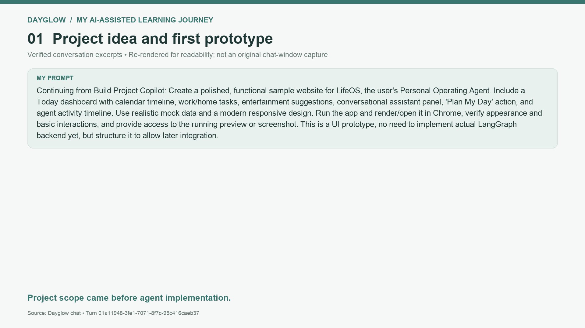
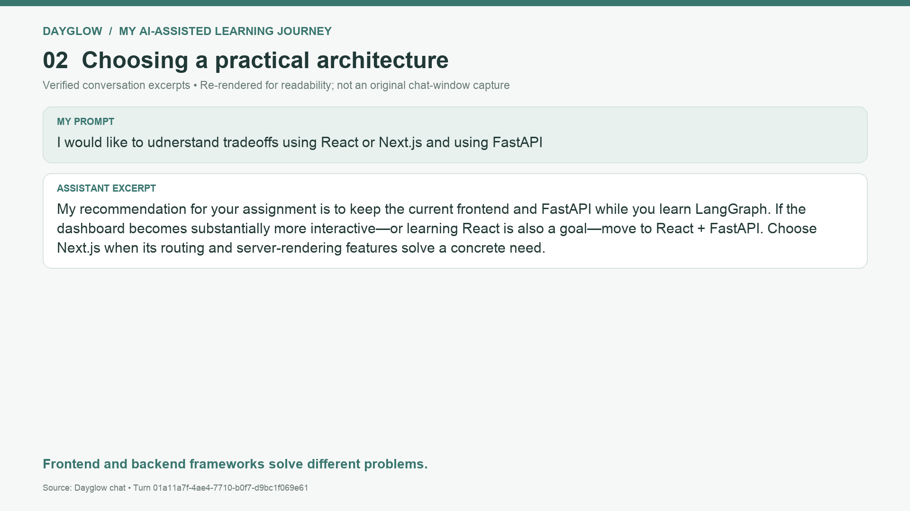
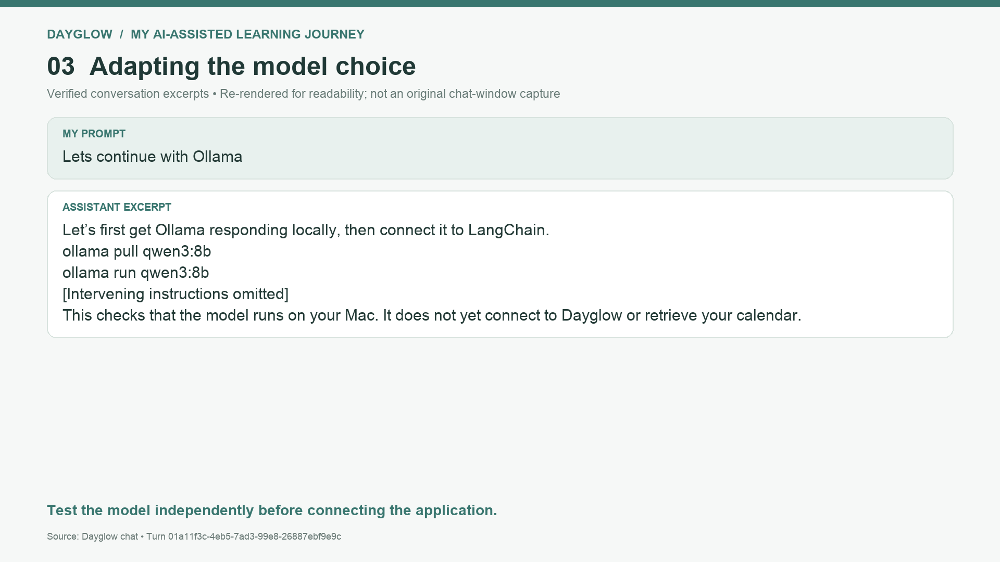
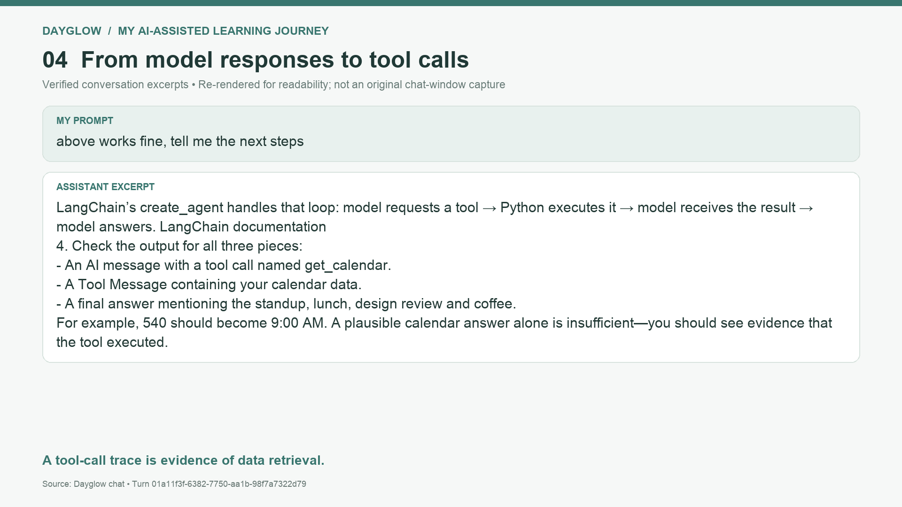
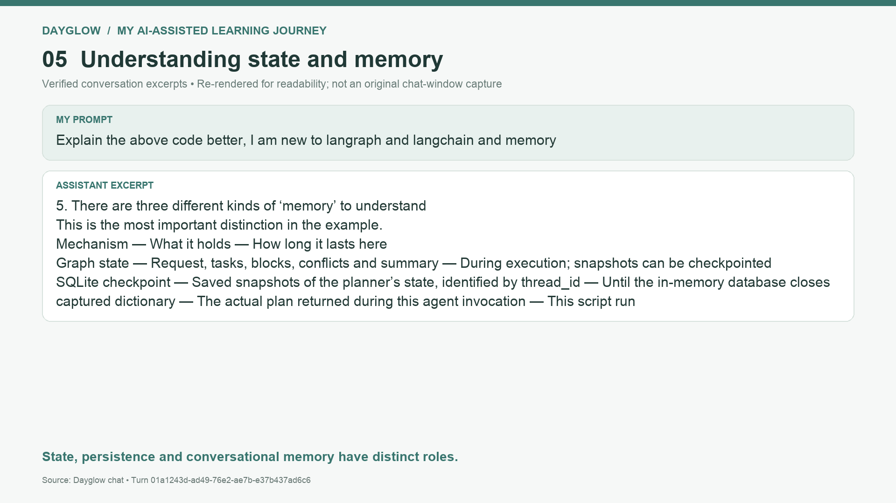
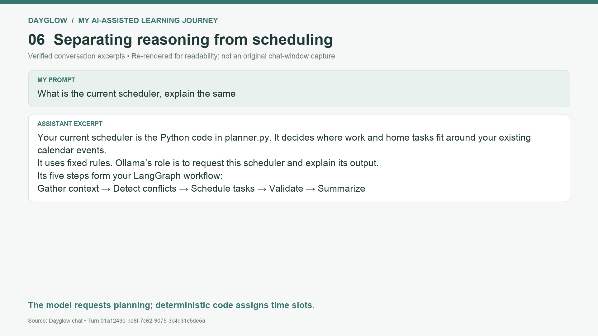
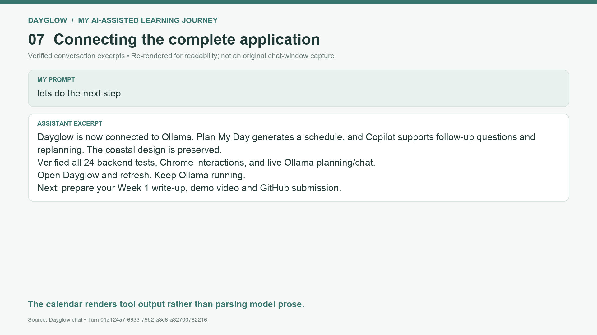
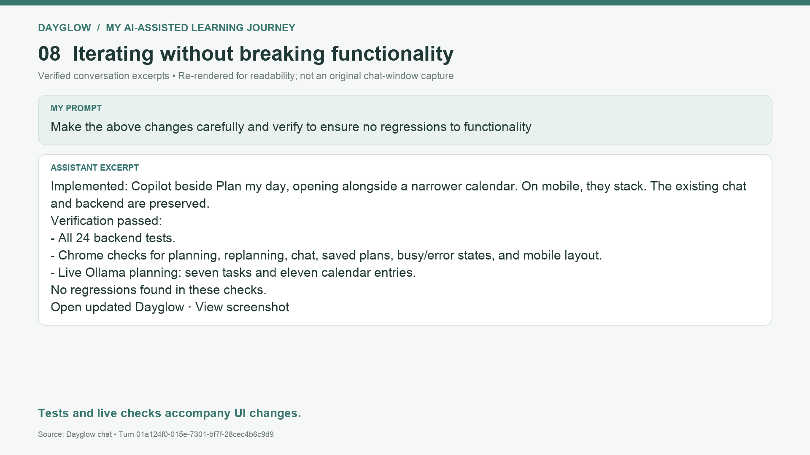
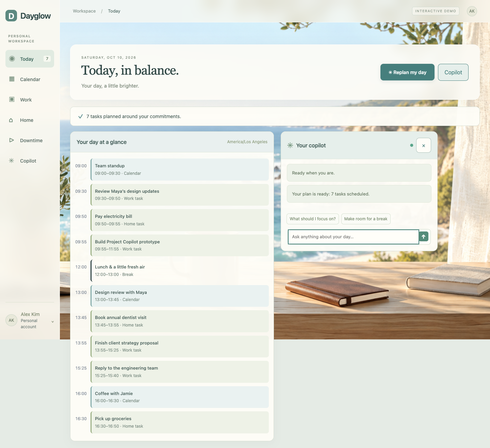

Eight verified chat-excerpt images and one application screenshot. Excerpt images are re-rendered, not original chat-window captures. Scroll through them while recording.
Recording guide
I used ChatGPT to turn a personal planning idea into a visible prototype, initially called LifeOS. The goal was to combine calendar commitments, work tasks and home responsibilities.

I compared React, Next.js and FastAPI, then kept the existing JavaScript interface and Python backend. This let me focus on learning the agent workflow without introducing a frontend migration.

I initially explored an OpenAI-backed agent. To avoid paid API usage for this assignment, I switched to a local model through Ollama and first verified that Qwen3 responded on my Mac.

My next milestone was a calendar tool. I checked the actual tool request, the returned data and the final answer, rather than assuming a plausible response proved the agent had retrieved information.

I asked for explanations as I built. I learned to distinguish graph state, saved checkpoints and conversation history. The early exercise used temporary planner storage; the final application uses separate persistent SQLite stores.

I learned why the model should not invent calendar times. The LangGraph workflow gathers context, detects conflicts, schedules, validates and summarizes. Python preserves commitments and defers tasks that cannot fit.

I connected the planning button and Copilot to FastAPI. The backend returns the model’s reply and the scheduler’s structured plan. The interface renders those blocks directly, preserving the existing design.

Finally, I refined the layout so Copilot and a narrower calendar sit beside each other. I verified backend tests, browser interactions and live Ollama planning. AI helped me build and debug, while I reviewed the behavior and learned the code.

Now switch to the live product, then walk through the code.